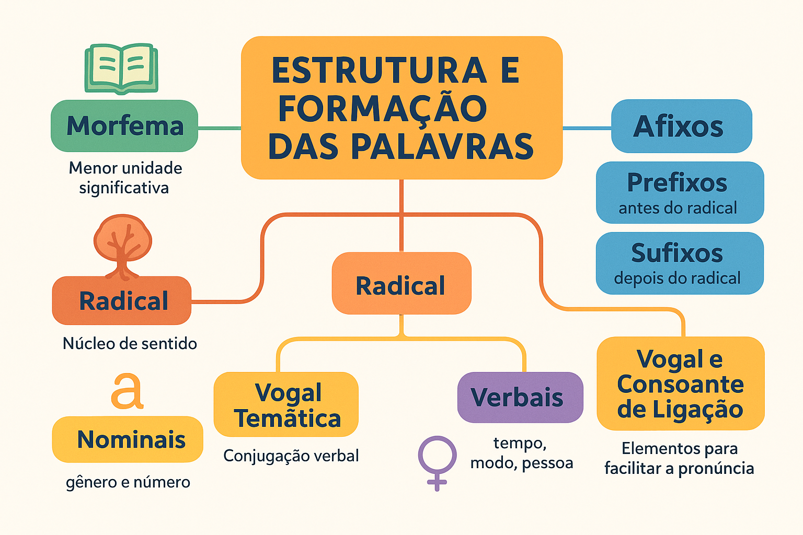

Estrutura e Formação das Palavras: morfemas, radical, afixos e desinências
A língua portuguesa é formada por palavras que, por sua vez, possuem uma morfemas, que desempenham papéis importantes na construção de sentido. Conhecer esses elementos ajuda a compreender melhor o funcionamento da língua e facilita tanto a leitura quanto a produção de textos.
🔹 Morfema
É a menor unidade significativa da palavra. Pode indicar ideia de radical (sentido básico), pluralidade, tempo verbal, entre outros.
Exemplo: em menininhas, temos os seguintes morfemas: menin- (radical) + -inh- (sufixo) + -a (vogal temática) + -s (desinência de plural).
🔹 Radical
É o núcleo da palavra, responsável por trazer seu sentido principal.
Exemplo:
– pedr- em pedra, pedreiro, pedregulho;
– cant- em cantar, cantoria, cantante.
🔹 Afixos (prefixo e sufixo)
São morfemas que se juntam ao radical para formar novas palavras.
- Prefixo: aparece antes do radical.
Exemplo: infeliz (prefixo in- + radical feliz). - Sufixo: aparece depois do radical.
Exemplo: felicidade (radical feliz + sufixo -dade).
🔹 Vogal Temática
É a vogal que vem depois do radical, unindo-o às desinências. É comum nos verbos, indicando sua conjugação.
Exemplo: cant-a-r → a vogal temática a mostra que o verbo pertence à 1ª conjugação.
🔹 Desinências
São morfemas que aparecem no final da palavra e indicam flexões.
- Nominais: indicam gênero e número.
Exemplo: menino / menina / meninos / meninas. - Verbais: indicam tempo, modo, pessoa e número.
Exemplo: cantávamos → desinência verbal -mos (1ª pessoa do plural).
🔹 Vogal ou Consoante de Ligação
Em alguns casos, é necessário acrescentar um som para facilitar a pronúncia da palavra.
Exemplo:
– Vogal de ligação: cafezal (radical café + vogal de ligação a + sufixo -zal).
– Consoante de ligação: gasômetro (radical gás + consoante ô adaptada + sufixo -metro).
✅ Conclusão
A análise da estrutura das palavras permite perceber como elas são formadas e de que modo os morfemas se combinam para expressar significados variados. Esse estudo, chamado de morfologia, é essencial para compreender a riqueza da língua portuguesa.